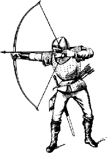

Un petit mot...
Bonjour et bienvenue sur ce site qui vous présentera en quelques lignes et images
notre humble association du Haut-Forez, qui compte de nombreux passionnés.
Nous espèrons que cette lecture vous apportera quelques informations pour ceux qui
nous connaissent mais aussi pour les curieux de passage.
Enfin pour les personnes qui auraient d'autres demandes, plusieurs boutons se trouvent
en bas de cette page pour nous contacter.
Chere lectrice, cher lecteur, nous vous souhaitons une très bonne visite.